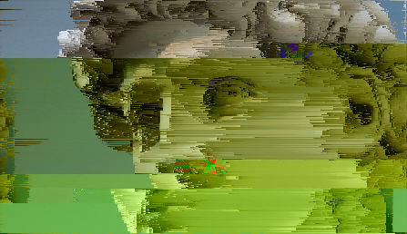
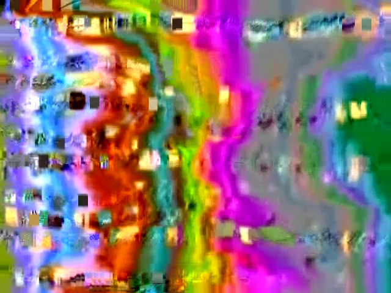

Glitching in Terminal
June 2025 // Digital Processes // Mentored by Viola Diehl

An exploration of different types of Glitching using the Windows Powershell terminal, various programs and the audio-editing program "Audacity".
In this project I explored three different types of glitching:
These manipulations produce an output that is very unpredictable and fragile. 


The behaviour of the image formats varies differently, with JPEG providing the most interesting results. 


In this project I explored three different types of glitching:
Data Bending
By uploading the image's raw data into Audacity, one is capable of applying audio effects to the raw data and reinterpret it as visual data.These manipulations produce an output that is very unpredictable and fragile.
Data Corruption
Using Tobias Løfgren's glitch tool, one can overwrite sections of an image, shuffle and delete byte ranges or inject new values into the raw data of an image.The behaviour of the image formats varies differently, with JPEG providing the most interesting results.
Pixel Sorting
A more orderly way of glitching. Using GitHub satyarth's pixelsort, the pixels of the image are sorted according to a specific property (eg. Lightness).Combinations
The last step was combining the three techniques. Kuppel in Motion
June 2025 // Motion Design // Mentored by Dirk Koy
Ffmpeg & Datamosh
April 2025 // Creative Coding // Mentored by Bérénice Serra

TW: Flashing Lights
Working with the libraries "ffmpeg" and "aviglitch".
The ffmpeg video effects allowed me to overlay a video with various blend modes. (credit to GitHub user NeuroWinter for the cheatsheet)
Using aviglitch I moshed the data of one video with another, which makes the data from both videos trying to overlay, creating abstract patterns.
Working with the libraries "ffmpeg" and "aviglitch".
The ffmpeg video effects allowed me to overlay a video with various blend modes. (credit to GitHub user NeuroWinter for the cheatsheet)
Using aviglitch I moshed the data of one video with another, which makes the data from both videos trying to overlay, creating abstract patterns.
Multiplied by Negative One
April 2025 // Creative Coding // Mentored by Martin Fuchs

It marked one of the first times I used code to change already existing information, paving the way for my experiments with glitch.
NO SIGNAL
January 2025 // Typography // Mentored by Jinsu Ahn
In collaboration with Pénélope Perret, we worked with a projector to place a sentence within a 3D environment. We mainly worked with reflections and sought to create a threating atmosphere to highlight the bleakness of our sentence.
Cave Paintings
January 2025 // AR/VR // Mentored by Kambiz Shafei
In collaboration with Cristina Bortolas, this project consisted of creating
a space for a virtual exhibition to take place
in, using 3D scans of an object we had photographed
in a prior course. These 3D scans
were then integrated into the physical world
through AR navigation, creating a hybrid environment
that was both digital and physical.
ZORNIG
December 2024 // Motion Design // Mentored by Dirk Koy
An animation that aims to portray a literal representation of the word zornig (angry).
Sleep Paralysis
October 2024 // Video // Mentored by Jonas Schaffter
In collaboration with Raoul Kuratle. A short-film aiming to depict an abstract representation of the phenomenon of sleep paralysis.